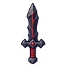
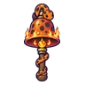
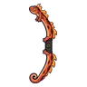
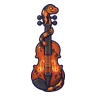
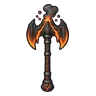
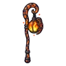
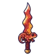
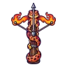

ซาลาแมนเดอร์
มอนธาตุไฟ Lv 68–90
เจอที่
| แมพ | โซน | Lv | ภูมิภาค |
|---|---|---|---|
| ภูเขาไฟหลับ | 74–79 | แดนใต้สีแดง | |
| ภูเขาไฟหลับ | สุสานมังกร | 78–82 | แดนใต้สีแดง |
| ปล่องภูเขาไฟ ชั้น 1 | 84–90 | แดนใต้สีแดง | |
| ลานหินออบซิเดียน | 68–84 | แดนใต้สีแดง | |
| ทะเลสาบลาวาเย็น | 68–84 | แดนใต้สีแดง | |
| ปากปล่องควันดำ | 68–84 | แดนใต้สีแดง | |
| หอรากมืด (Dark Root) | เส้นเลือดถ่านไฟ | 33–42 | |
| หอดาวร่วง | ชั้นหอดาวร่วง | 89–99 |
ค่าสถานะตามเลเวล
| Lv | HP | ATK | DEF | MDEF | EXP | Job |
|---|---|---|---|---|---|---|
| 68 | 28,507 | 154–231 | 33 | 12 | 91 | 68 |
| 79 | 43,648 | 186–279 | 38 | 14 | 105 | 79 |
| 90 | 64,563 | 220–329 | 43 | 16 | 118 | 89 |
ตีด้วยธาตุไหนดี
แรงขึ้น: น้ำ ×1.5 พิษ ×1.25
เบาลง: ดิน ×0.5 ไฟ ×0.25
วัตถุดิบที่ดรอป
| ของ | โอกาส | |
|---|---|---|
| เกล็ดซาลาแมนเดอร์ | 55% | 1 ชิ้น (15% ได้ 2) |
อุปกรณ์ที่ดรอป (10)
| ของ | โอกาส |
|---|---|
 ดาบแก้วภูเขาไฟ | 0.25% |
 กระดิ่งวิญญาณซาลาแมนเดอร์ | 0.12% |
 ธนูซาลาแมนเดอร์ | 0.12% |
 เครื่องดนตรีซาลาแมนเดอร์ | 0.12% |
| 0.06% | |
 ขวานยักษ์ภูเขาไฟ | 0.06% |
| 0.06% | |
 ตะเกียงซาลาแมนเดอร์ | 0.06% |
 ดาบเกล็ดซาลาแมนเดอร์ | 0.06% |
 หน้าไม้ซาลาแมนเดอร์ | 0.06% |
สกิล
พ่น (Lv 25+) · พ่น (Lv 60+) · กระโจน (Lv 60+)